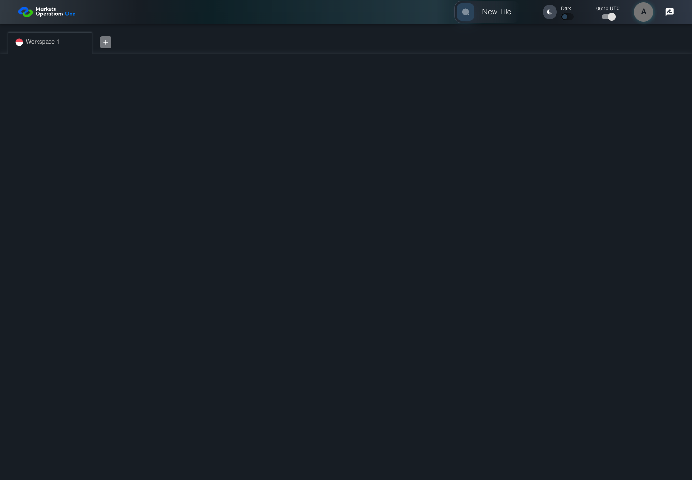

UI-RISK-001 reject the disabled Global default
FAIL · application/run-050/ui-risk-001-reject-the-disabled-global-default-0be958aabe27-attempt-1 · ACTUAL_APPLICATION_LOCAL_SERVICES
Actual current React shell and internal admin modules. Controlled login, validation, activity renewal, UI-USER-01 entity roles, and empty administration endpoint responses. Controlled tenant component is used only for the disabled-default risk case. No BFF permission or business tenant acceptance.
2026-10-22T06:10:02.388Z to 2026-10-22T06:10:10.685Z
Assertions and result · Artifact manifest · Exact run inputs and source hashes
Result SHA-256:36d48037b271d2fdb9d629a2428c6fa0f35a1a188d312624b2cb83fd68d977bbRetained failure details
[
{
"message": "Error: \u001b[2mexpect(\u001b[22m\u001b[31mlocator\u001b[39m\u001b[2m).\u001b[22mtoHaveCount\u001b[2m(\u001b[22m\u001b[32mexpected\u001b[39m\u001b[2m)\u001b[22m failed\n\nLocator: getByRole('tabpanel').visible().getByTestId('fixture-tile-route').filter({ hasText: /^\\/tile-global$/ })\nExpected: \u001b[32m0\u001b[39m\nReceived: \u001b[31m1\u001b[39m\nTimeout: 5000ms\n\nCall log:\n\u001b[2m - Expect \"toHaveCount\" getByRole('tabpanel').visible().getByTestId('fixture-tile-route').filter({ hasText: /^\\/tile-global$/ }) with timeout 5000ms\u001b[22m\n\u001b[2m - waiting for getByRole('tabpanel').visible().getByTestId('fixture-tile-route').filter({ hasText: /^\\/tile-global$/ })\u001b[22m\n\u001b[2m 14 \u00d7 locator resolved to 1 element\u001b[22m\n\u001b[2m - unexpected value \"1\"\u001b[22m\n",
"stack": "Error: \u001b[2mexpect(\u001b[22m\u001b[31mlocator\u001b[39m\u001b[2m).\u001b[22mtoHaveCount\u001b[2m(\u001b[22m\u001b[32mexpected\u001b[39m\u001b[2m)\u001b[22m failed\n\nLocator: getByRole('tabpanel').visible().getByTestId('fixture-tile-route').filter({ hasText: /^\\/tile-global$/ })\nExpected: \u001b[32m0\u001b[39m\nReceived: \u001b[31m1\u001b[39m\nTimeout: 5000ms\n\nCall log:\n\u001b[2m - Expect \"toHaveCount\" getByRole('tabpanel').visible().getByTestId('fixture-tile-route').filter({ hasText: /^\\/tile-global$/ }) with timeout 5000ms\u001b[22m\n\u001b[2m - waiting for getByRole('tabpanel').visible().getByTestId('fixture-tile-route').filter({ hasText: /^\\/tile-global$/ })\u001b[22m\n\u001b[2m 14 \u00d7 locator resolved to 1 element\u001b[22m\n\u001b[2m - unexpected value \"1\"\u001b[22m\n\n at /Users/lushevol/code/github/ratan-release-impact/workbench/e2e/audit-specs/module-risk-expanded.spec.ts:58:112\n at AuditCapture.step (/Users/lushevol/code/github/ratan-release-impact/workbench/e2e/support/audit-fixture.ts:94:21)\n at /Users/lushevol/code/github/ratan-release-impact/workbench/e2e/audit-specs/module-risk-expanded.spec.ts:50:3",
"location": {
"file": "/Users/lushevol/code/github/ratan-release-impact/workbench/e2e/audit-specs/module-risk-expanded.spec.ts",
"column": 112,
"line": 58
},
"snippet": " 56 | source: 'repos/ui/mfe-base/src/components/Drawer/MenuItem.tsx',\n 57 | expected: 'No newly added workspace displays /tile-global' });\n> 58 | await expect(app.selectedPanel().getByTestId('fixture-tile-route').filter({ hasText: /^\\/tile-global$/ })).toHaveCount(0);\n | ^\n 59 | });\n 60 | await audit.step(5, async () => { await expect(app.entry('Indonesia')).toBeEnabled(); });\n 61 | });"
}
]Machine observations
- disabled-default-result.json
05e1f71d361ebad1129922335266bbf004f2cd94e1117f4badf9c3c488bd009d
Screenshot capture: CAPTURED. Named frames: 5.
Step screenshot bindings: INCOMPLETE. 4/5 canonical steps have execution screenshots.
Bindings measure structural coverage only. They do not establish screenshot content quality or relevance.
Screenshot content review: NOT_REVIEWED. Recorded context: 0/5 frames. Identical image bytes: 1 repeated frames. Recorded context does not establish human visual review.
Step 5 has no screenshot from an executed step.
Canonical step timeline
Given User A is authenticated as fixture UI-USER-01 with the case-specific permissions
Execution: PASSED.
1. step-01 Visible state after step 1: Given User A is authenticated as fixture UI-USER-01 with the case-specific permissions
2026-10-22T06:10:03.521Z · 1440×1000
Step: /Users/lushevol/code/github/ratan-release-impact/workbench/tasks/ui-test-coverage-20261022/test-cases.md:10142
SHA-256:62663cfeca023d174900a8d567724717b5d6bfadd506f35ea402176baf1439adAnd T-GLOBAL is disabled and T-ID is enabled in one card
Execution: PASSED.2. step-02 Visible state after step 2: And T-GLOBAL is disabled and T-ID is enabled in one card
2026-10-22T06:10:04.437Z · 1440×1000
Step: /Users/lushevol/code/github/ratan-release-impact/workbench/tasks/ui-test-coverage-20261022/test-cases.md:10143
SHA-256:79a6f8e46178769937fcfa8417b01704f9af482994d1d126baf89d6e11739131When User A clicks section with text "Test Tile" inside the tile group with subtitle "Demo" in the fixture category inside the right drawer titled "Tile Options"
Execution: PASSED.3. step-03 Visible state after step 3: When User A clicks section with text "Test Tile" inside the tile group with subtitle "Demo" in the fixture category inside the right drawer titled "Tile Options"
2026-10-22T06:10:04.547Z · 1440×1000
Step: /Users/lushevol/code/github/ratan-release-impact/workbench/tasks/ui-test-coverage-20261022/test-cases.md:10144
SHA-256:63aac7d883013ce2c946da9f070e4d9768ed94e428f2b931066d74c51f4f3dc6Then no newly added workspace displays the disabled Global tile route "/tile-global"
Execution: FAILED.4. step-04-failure Visible state when step 4 failed. Later steps did not execute.
2026-10-22T06:10:10.403Z · 1440×1000
Step: /Users/lushevol/code/github/ratan-release-impact/workbench/tasks/ui-test-coverage-20261022/test-cases.md:10145
SHA-256:4d60c1891936013247ab07170d90ecfd767b9c1ad74432d88c85edbd905c4a87And button named "Indonesia" inside the section identified by title "Test Tile" and subtitle "Demo" is enabled
Execution: NOT_EXECUTED.No screenshot is recorded for this step. No executed state is claimed.
Additional named frames

The visible state when the test failed.
2026-10-22T06:10:10.467Z · 1440×1000Step: Test source: /Users/lushevol/code/github/ratan-release-impact/workbench/e2e/audit-specs/module-risk-expanded.spec.ts:39
SHA-256:
4d60c1891936013247ab07170d90ecfd767b9c1ad74432d88c85edbd905c4a87Image bytes match frame 4. An unchanged image can be valid for consecutive assertions. This match does not establish correct step content.
Screenshots establish visible state only. Assertions and traces support functional claims.